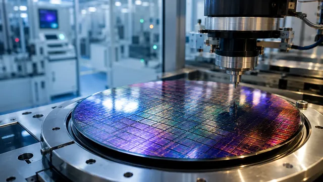
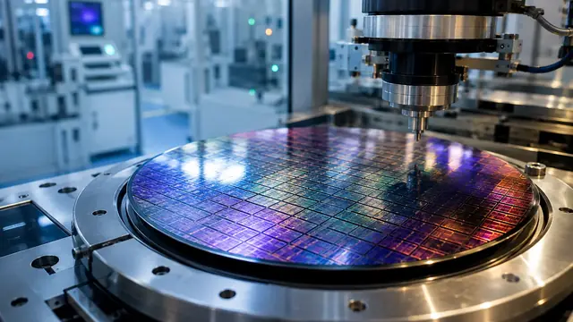

MemSilicon raises $60M Series A to build RRAM compute-in-memory chips for AI inference — ex-Graphcore chief takes the helm
- Who: MemSilicon (Mingxin Qirui), a Chinese compute-in-memory chip company whose team comes from the group of academician Liu Ming at the Chinese Academy of Sciences; new CEO and co-founder Lu Tao.
- What: a Series A round of more than 400 million yuan, roughly $60 million, led by Boyuan Capital.
- When: announced October 19, 2026.
- Investors: new backers Bosch Ventures, Chuangling Capital, miHoYo, Zhongguancun Science City and GigaDevice; existing shareholders adding capital include Fusong Investment, CDB Science & Technology Innovation, Hengyu Capital, Jinqiu Fund, Shunxi Fund, Xiaomi Strategic Investment and CAS Star.
- Use of funds: industrialization and commercialization of RRAM technology, plus development of a first-generation LPU.
- Strategy: RRAM as the memory foundation, the LPU as the compute engine — aimed at large-model inference.
Chinese chip startup MemSilicon has closed a Series A round of more than 400 million yuan — roughly $60 million — led by Boyuan Capital, the company announced on October 19, 2026. Alongside the raise, it named veteran chip executive Lu Tao as chief executive officer and co-founder, repositioning itself around a radical idea for the AI era: chips where the memory does the computing.
The raise
MemSilicon — rendered as Mingxin Qirui in Chinese coverage — said its Series A exceeded 400 million yuan. The round was led by Boyuan Capital, with Bosch Ventures (Robert Bosch Venture Capital), Chuangling Capital, miHoYo, Zhongguancun Science City and GigaDevice joining as new investors. Existing shareholders — including Fusong Investment, CDB Science & Technology Innovation, Hengyu Capital, Jinqiu Fund, Shunxi Fund, Xiaomi Strategic Investment and CAS Star — increased their stakes, according to RecodeX Pro’s account of the company’s press release.
The money, the company said, will fund the industrialization and commercialization of its RRAM technology and the development of a first-generation LPU — MemSilicon’s name for the compute-in-memory processor it wants to build.

Memory that computes
The pitch is simple to state and brutally hard to execute: make the memory do the math. RRAM — resistive random-access memory — is a non-volatile memory technology that researchers have explored for years as a fabric for in-memory computing: instead of shuttling data back and forth between memory and processor, matrix operations happen inside the memory array itself, collapsing the data movement that dominates the cost and energy of AI inference. Experimental memristor arrays have shown the basic math works in hardware — now someone has to turn it into a product.
MemSilicon’s stated strategy puts RRAM as the memory foundation and the LPU as the compute engine, with large-model inference as the target market. The team comes from the group of Liu Ming, an academician at the Chinese Academy of Sciences, and says it has more than two decades of accumulated expertise spanning RRAM materials, device physics, processes and chip design — plus research reserves in 3D integration, near-memory computing and hybrid compute-in-memory architectures.
Lu Tao’s second act
Lu Tao is no stranger to long-shot chip bets. He has spent more than 20 years in the industry: as vice president of Lightelligence, as president and Greater China general manager at Graphcore, and as general manager of China at Cavium. His portfolio has run across Arm-based server CPUs, DPUs, RDMA network cards, data-center switch chips, Graphcore’s SRAM-based AI processor (the IPU), 3D-stacked-DRAM NPUs and silicon photonics chips.
That Graphcore chapter is the one to watch. Graphcore built a genuinely novel AI chip and still never established a large commercial base in the data-center market — the gulf between architectural innovation and shipped product that ultimately sank it. As RecodeX noted, MemSilicon’s team is distinguished by device-level expertise rather than AI-chip product definition and customer delivery — and Lu Tao’s résumé fills exactly that gap.

Why this matters
Inference is where the AI industry’s money is made and lost. The GPU shortage made the headlines; the industry’s current obsession is inference cost per token. Compute-in-memory is one of the few architectural directions that promises order-of-magnitude efficiency gains rather than incremental ones — at the price of enormous device and manufacturing complexity.
A $60 million Series A buys MemSilicon the runway to prove it can productize: turn RRAM from a lab curiosity into an industrialized technology and ship a first-generation LPU that real customers can buy. The CEO hire signals the company knows the device story alone won’t be enough — someone has to sell the chip too.
Frequently asked questions
What did MemSilicon announce on October 19, 2026?
A Series A round of more than 400 million yuan — about $60 million — led by Boyuan Capital, with Bosch Ventures, Chuangling Capital, miHoYo, Zhongguancun Science City and GigaDevice participating, alongside the appointment of Lu Tao as CEO and co-founder. The company says the money will fund the industrialization and commercialization of its RRAM technology and the development of a first-generation LPU.
Who is Lu Tao?
A chip-industry veteran with more than 20 years of experience. He previously served as vice president of Lightelligence, as president and Greater China general manager at Graphcore, and as general manager of China at Cavium. He joins MemSilicon as chief executive officer and co-founder.
What are RRAM and the LPU, and what is compute-in-memory?
Compute-in-memory performs calculations inside the memory array instead of shuttling data back and forth between memory and processor, cutting the data movement that dominates the cost and energy of AI inference. RRAM — resistive random-access memory — is the non-volatile memory technology MemSilicon is working to industrialize. The LPU is the company’s name for the first-generation compute-in-memory processor it plans to build, aimed at large-model inference.